Knight
Sturdy. Shield Bash stuns and can interrupt heavy attacks.
- Shield Bash
- 130% dmg, stuns 2s 6s
- Bulwark
- +armor for 4s, Perfect banks 2 blocks 12s
a bloodline roguelike
Your line is cursed to climb. Each heir who falls feeds the Manor; each generation climbs higher. Reach the Sovereign at floor 50.
Coming to Google Play. A closed test is running now.
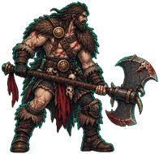
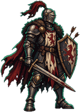
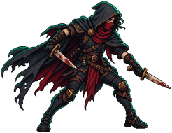
the climb
Every door is a choice. Every tenth floor holds a gate keeper. When an heir falls, the souls they gathered return to the Manor, the gold feeds the Armory, and the next heir climbs stronger. The summit stands on floor 50. Each ascension hardens the Spire, and from the fourth it raises the summit, to floor 200 at Ascension 10.
Each generation draws new heirs with their own traits. Whatever one dies holding can pass down as an heirloom.
Relics drop as a hand of sealed cards. Break the seals, take one, the others burn. 21 of them change a rule rather than a number.
Your heir swings on their own. High rolls hit harder, your crit number scores a critical, and a cast at the peak of a swing lands Perfect.
Craft permanent gear with gold. Try a free practice first. Heat, three blows, then quench. Five perfect marks make a Masterwork. Practice grants no gear.
The Spire does not bury its dead. It employs them.the Grimoire, on Skeletons
on the phone
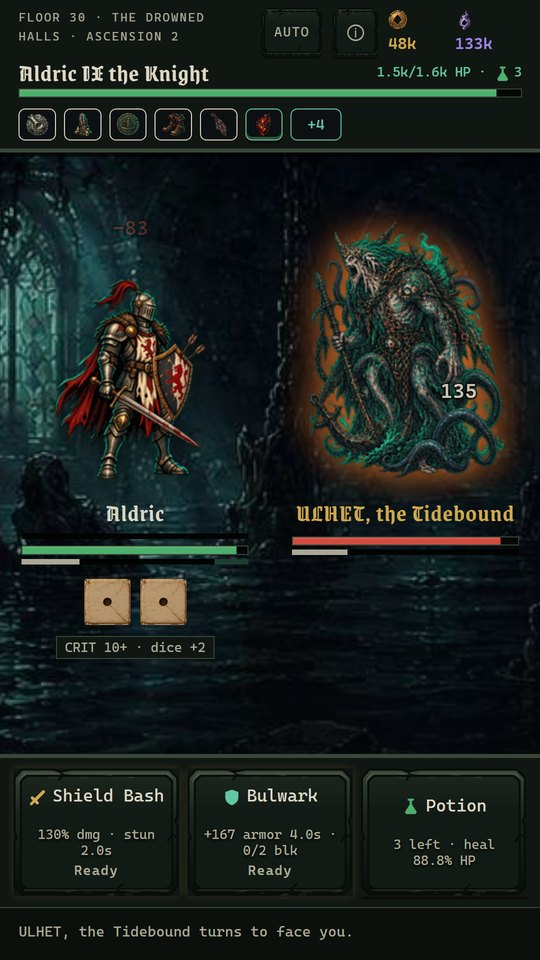


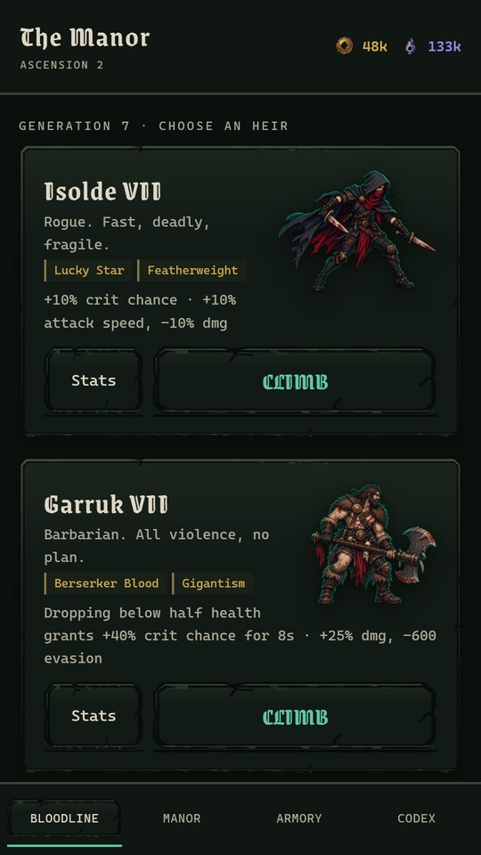
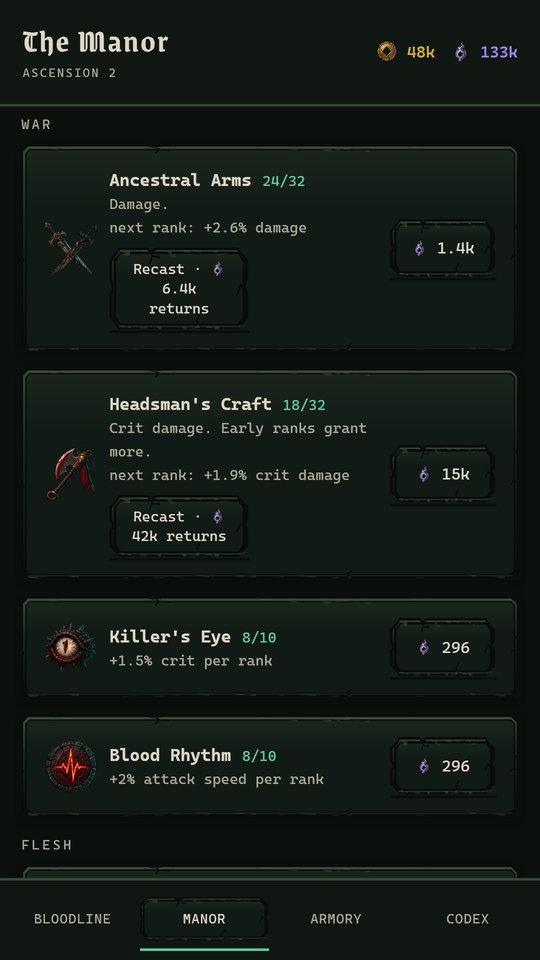

the six lines
One class is open from the first climb. The Manor opens the rest, and each brings two abilities that bargains can reshape and temper along the way.
Sturdy. Shield Bash stuns and can interrupt heavy attacks.
Fast, deadly, fragile.
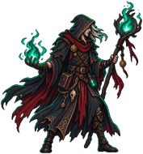
Slow swings, huge spells.
All violence, no plan.
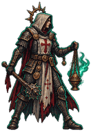
Endures anything.
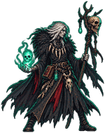
Grows stronger with every kill this run.
the grimoire
Five zones of ten floors, each with its own foes, an elite that winds up heavy blows, and a gate keeper at the tenth floor. The lines are the Grimoire's own.
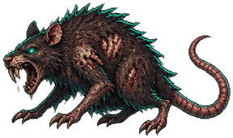
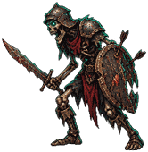
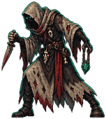
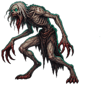
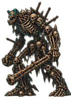
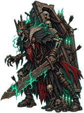
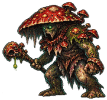
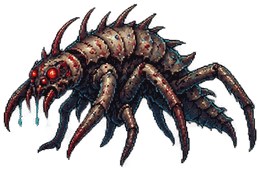
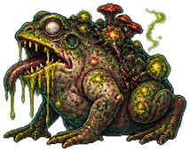
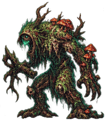
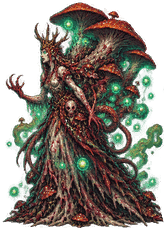
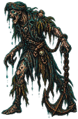
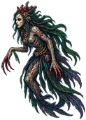
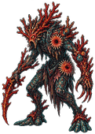
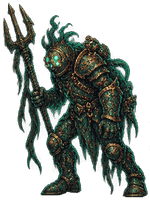
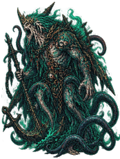
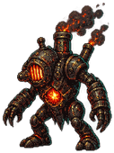
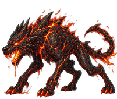
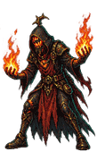
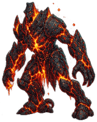
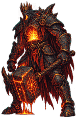
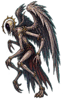
Past the summit the Spire echoes: The Ossuary Gardens, The Mirror Marsh, The Chandler's Halls, The Starving Church, The Clockwork Abyss. Those are yours to find.
the reliquary
Every relic in the pool, as the game describes it today. Descriptions are read from the game itself, so this page changes when the game does.
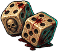
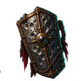
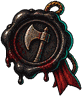
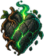
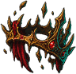
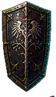
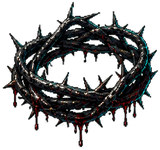
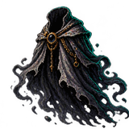
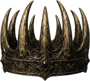
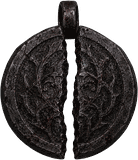
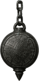
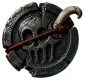
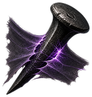
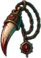
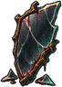
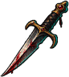
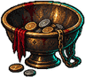
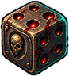
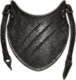
before the climb
From the first ascension, swear hardships at the Manor gate. Each oath raises what the Spire pays.